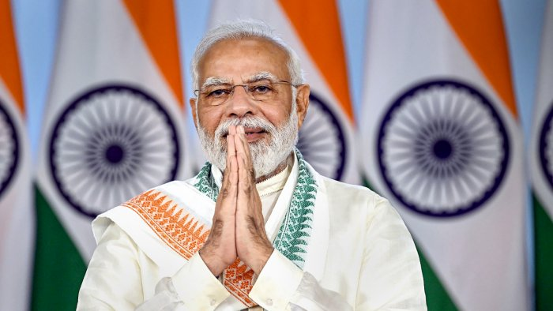

Narendra Modi
The Prime Minister of India

Narendra Damodardas Modi (Gujarati: [ˈnəɾendɾə dɑmodəɾˈdɑs ˈmodiː] (listen);
born 17 September 1950)[b] is an Indian politician serving as the 14th and current Prime Minister of
India since 2014.
All about the Narendra Modi:
- Also Known As:- Narendra Damodardas Modi
- Born:- September 17, 1950 (age 72) India
- Title / Office:-prime minister (2014-), India
- Political Affiliation:- Bharatiya Janata Party • Rashtriya Swayamsevak Sangh
- Early life and political career:-Modi was raised in a small town in northern
Gujarat, and he completed an M.A. degree in political science from Gujarat University in Ahmadabad.
He joined the pro-Hindu Rashtriya Swayamsevak Sangh (RSS) organization in the early 1970s and set up
a unit of the RSS’s students’ wing, the Akhil Bharatiya Vidyarthi Parishad, in his area. Modi rose
steadily in the RSS hierarchy, and his association with the organization significantly benefited his
subsequent political career.
Modi joined the BJP in 1987, and a year later he was made the general secretary of the Gujarat branch of the party. He was instrumental in greatly strengthening the party’s presence in the state in succeeding years. In 1990 Modi was one of the BJP members who participated in a coalition government in the state, and he helped the BJP achieve success in the 1995 state legislative assembly elections that in March allowed the party to form the first-ever BJP-controlled government in India. The BJP’s control of the state government was relatively short-lived, however, ending in September 1996. - Political ascent and term as chief minister of Gujarat:-In 1995 Modi was made the
secretary of the BJP’s national organization in New Delhi, and three years later he was appointed
its general secretary. He remained in that office for another three years, but in October 2001 he
replaced the incumbent Gujarat chief minister, fellow BJP member Keshubhai Patel, after Patel had
been held responsible for the state government’s poor response in the aftermath of the massive Bhuj
earthquake in Gujarat earlier that year that killed more than 20,000 people. Modi entered his
first-ever electoral contest in a February 2002 by-election that won him a seat in the Gujarat state
assembly.
Modi’s political career thereafter remained a mixture of deep controversy and self-promoted achievements. His role as chief minister during communal riots that engulfed Gujarat in 2002 was particularly questioned. He was accused of condoning the violence or, at least, of doing little to stop the killing of more than 1,000 people, mostly Muslims, that ensued after dozens of Hindu passengers died when their train was set on fire in the city of Godhra. In 2005 the United States declined to issue him a diplomatic visa on the grounds that he was responsible for the 2002 riots, and the United Kingdom also criticized his role in 2002. Although in the succeeding years Modi himself escaped any indictment or censure—either by the judiciary or by investigative agencies—some of his close associates were found guilty of complicity in the 2002 events and received lengthy jail sentences. Modi’s administration was also accused of involvement in extrajudicial killings (variously termed “encounters” or “fake encounters”) by police or other authorities. One such case, in 2004, involved the deaths of a woman and three men whom officials said were members of Lashkar-e-Taiba (a Pakistan-based terrorist organization that was involved in the 2008 Mumbai terrorist attacks) and were alleged to have been plotting to assassinate Modi.
Modi’s repeated political success in Gujarat, however, made him an indispensable leader within the BJP hierarchy and led to his reintegration into the political mainstream. Under his leadership, the BJP secured a significant victory in the December 2002 legislative assembly elections, winning 127 of the 182 seats in the chamber (including a seat for Modi). Projecting a manifesto for growth and development in Gujarat, the BJP was again victorious in the 2007 state assembly elections, with a seat total of 117, and the party prevailed again in the 2012 polls, garnering 115 seats. Both times Modi won his contests and returned as chief minister.
During his time as head of the Gujarat government, Modi established a formidable reputation as an able administrator, and he was given credit for the rapid growth of the state’s economy. In addition, his and the party’s electoral performances helped advance Modi’s position as not only the most-influential leader within the party but also a potential candidate for prime minister of India. In June 2013 Modi was chosen the leader of the BJP’s campaign for the 2014 elections to the Lok Sabha. - Premiership of Narendra Modi:-After a vigorous campaign—in which Modi portrayed
himself as a pragmatic candidate who could turn around India’s underperforming economy—he and the
party were victorious, with the BJP winning a clear majority of seats in the chamber. Modi was sworn
in as prime minister on May 26, 2014. Soon after he took office, his government embarked on several
reforms, including campaigns to improve India’s transportation infrastructure and to liberalize
rules on direct foreign investment in the country. Modi scored two significant diplomatic
achievements early in his term. In mid-September he hosted a visit by Chinese President Xi Jinping,
the first time a Chinese leader had been to India in eight years. At the end of that month, having
been granted a U.S. visa, Modi made a highly successful visit to New York City, which included a
meeting with U.S. Pres. Barack Obama.
As prime minister, Modi oversaw a promotion of Hindu culture and the implementation of economic reforms. The government undertook measures that would broadly appeal to Hindus, such as its attempt to ban the sale of cows for slaughter. The economic reforms were sweeping, introducing structural changes—and temporary disruptions—that could be felt nationwide. Among the most far-reaching was the demonetization and replacement of 500- and 1,000-rupee banknotes with only a few hours’ notice. The purpose was to stop “black money”—cash used for illicit activities—by making it difficult to exchange large sums of cash. The following year the government centralized the consumption tax system by introducing the Goods and Services Tax (GST), which superseded a confusing system of local consumption taxes and eliminated the problem of cascading tax. GDP growth slowed from these changes, though growth had already been high (8.2 percent in 2015), and the reforms succeeded in expanding the government’s tax base. Still, rising costs of living and increasing unemployment disappointed many as grandiose promises of economic growth remained unfulfilled.
This disappointment registered with voters during the elections in five states in late 2018. The BJP lost in all five states, including the BJP strongholds of Madhya Pradesh, Rajasthan, and Chhattisgarh. The rival Indian National Congress (Congress Party) won more state assembly seats than the BJP in all five elections. Many observers believed that this portended bad news for Modi and the BJP in the national elections set for the spring of 2019, but others believed that Modi’s charisma would excite the voters. Moreover, a security crisis in Jammu and Kashmir in February 2019, which escalated tensions with Pakistan to the highest point in decades, boosted Modi’s image just months before the election. With the BJP dominating the airwaves during the campaign—in contrast to the lacklustre campaign of Rahul Gandhi and Congress—the BJP was returned to power, and Modi became India’s first prime minister outside of the Congress Party to be reelected after a full term.
In his second term Modi’s government revoked the special status of Jammu and Kashmir, stripping it of autonomy in October 2019 and bringing it under the direct control of the union government. The move came under intense criticism and faced challenges in court, not only for the questionable legality of depriving Jammu and Kashmir’s residents of self-determination but also because the government severely restricted communications and movement within the region.
In March 2020, meanwhile, Modi took decisive action to combat the outbreak of COVID-19 in India, swiftly implementing strict nationwide restrictions to mitigate the spread while the country’s biotechnology firms became key players in the race to develop and deliver vaccines worldwide. As part of the effort to counter the economic impact of the COVID-19 pandemic, Modi undertook executive action in June to liberalize the agricultural sector, a move that was codified into law in September. Many feared that the reforms would make farmers vulnerable to exploitation, however, and protesters took to the streets in opposition to the new laws. Beginning in November, massive protests were organized and became a regular disruption, particularly in Delhi.
Modi’s policies backfired in 2021. Protests escalated (culminating in the storming of the Red Fort in January), and extraordinary restrictions and crackdowns by the government failed to suppress them. Meanwhile, despite the remarkably low spread of COVID-19 in January and February, by late April a rapid surge of cases caused by the new Delta variant had overwhelmed the country’s health care system. Modi, who had held massive political rallies ahead of state elections in March and April, was criticized for neglecting the surge. The BJP ultimately lost the election in a key battleground state despite heavy campaigning. In November, as protests continued and another set of state elections approached, Modi announced that the government would repeal the agricultural reforms.
That's all about the Narendra Modi